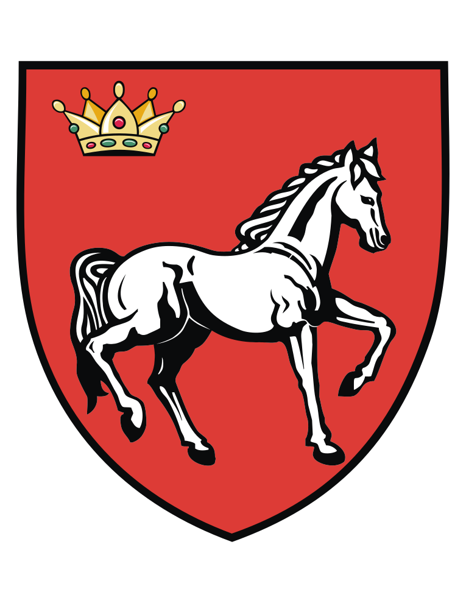

Ghișeu Unic de Eficiență Energetică
🌳 Powering a Greener Tomorrow for Our Community



Consiliul Județean Iași🌳 Powering a Greener Tomorrow for Our Community

Consiliul Județean IașiLista programelor și resurselor relevante, cu link-urile oficiale.
👉 DE REȚINUT
Accesul la Ghișeul Unic de Eficiență Energetică Iași se face prin intrarea principală a instituției, cu înregistrare în registrul de vizitatori la paznicul de la intrarea principală. Este necesară prezentarea unui act de identitate. Menționăm că nu este nevoie de programare prealabilă! Programul de lucru al Ghișeului este cel afișat în secțiunea
Program.
Furnizarea de informare, consiliere și sprijin tehnic privind:
Dosarele pot fi depuse personal la sediul GUEE din Iași
Termeni relevanți pentru activitatea GUEE și eficiența energetică.
| Termen | Definiție | Sursă |
|---|---|---|
| ghișee unice de eficiență energetică | se înființează în scopul oferirii serviciilor de informare și consiliere tehnică în domeniul eficienței energetice în clădiri și al utilizării surselor regenerabile de energie pentru consumatori și prosumatori, către persoane fizice și juridice, inclusiv comunități de energie, potențiali beneficiari ai investițiilor, în privința programelor de investiții finanțate din fonduri europene, din bugetul de stat, precum și alte surse legal constituite | O.U.G. nr. 92/2024 |
| prosumator | clientul final care își desfășoară activitățile în spațiul propriu deținut cu orice titlu, aferent unui punct de delimitare cu rețeaua electrică, precizat prin certificatul de racordare și care produce energie electrică din surse regenerabile pentru propriul consum, a cărui activitate specifică nu este producerea energiei electrice, care consumă și care poate stoca și vinde energie electrică produsă sau stocată furnizorului de energie electrică cu care acesta are încheiat contract de furnizare a energiei electrice și/sau consumatorilor racordați la barele centralei electrice, inclusiv care poate deconta energia electrică produsă și livrată cu energia electrică consumată din rețea pentru mai multe locuri de producere și consum ale acestora, dacă pentru locurile de consum respective este același furnizor de energie electrică și dacă sunt racordate la rețeaua electrică a distribuitorului la care este racordat prosumatorul, cu condiția ca, în cazul consumatorilor autonomi necasnici de energie, aceste activități să nu constituie activitatea lor comercială sau profesională primară | Legea nr. 123/2012 (art. 3 pct. 95) |
| consumator vulnerabil | persoană singură/familie, client final aparținând unei categorii de clienți casnici care, din motive de sănătate, handicap, vârstă, venituri insuficiente sau izolare față de sursele de energie, se află în risc de marginalizare socială și care, pentru prevenirea acestui risc, beneficiază de măsuri de protecție socială, inclusiv de natură financiară, și servicii suplimentare pentru a-și asigura cel puțin nevoile energetice minimale. Măsurile de protecție socială, precum și criteriile de eligibilitate pentru acestea se stabilesc prin acte normative | Legea nr. 123/2012 (art. 3 pct. 95) |
| audit energetic al clădirii | totalitatea activităților specifice prin care se obțin date și elemente tehnice despre profilul consumului energetic al unei clădiri/unități de clădire existente, urmate de identificarea soluțiilor de creștere a performanței energetice, de cuantificarea modificărilor consumurilor energetice rezultate din soluțiile propuse, de evaluarea eficienței economice a implementării acestora prin indicatori economici și finalizate cu raportul de audit, potrivit metodologiei de calcul al performanței energetice a clădirilor | Legea nr. 372/2005 (art. 3 pct. 21) |
| auditor energetic pentru clădiri | persoană fizică atestată de Ministerul Lucrărilor Publice, Dezvoltării și Administrației, în conformitate cu prevederile legale în vigoare, care are dreptul să elaboreze rapoarte de audit energetic și/sau certificate de performanță energetică pentru clădiri/unități de clădire, în conformitate cu metodologia specifică adoptată la nivel național aprobată prin ordin al ministrului lucrărilor publice, dezvoltării și administrației. Auditorul energetic pentru clădiri este specialistul care își desfășoară activitatea ca persoană fizică autorizată sau ca angajat al unor persoane juridice, conform prevederilor legale în vigoare | Legea nr. 372/2005 (art. 3 pct. 23) |
| expert tehnic atestat | specialist, persoană fizică, atestat de Ministerul Lucrărilor Publice, Dezvoltării și Administrației potrivit prevederilor Legii nr. 10/1995 privind calitatea în construcții, republicată, cu modificările și completările ulterioare, pentru specialitățile instalații de încălzire, instalații de ventilare, instalații de climatizare și condiționare a aerului. Expertul tehnic atestat este specialistul care are dreptul să realizeze inspecții, din punctul de vedere al eficienței energetice, ale sistemelor de încălzire, de climatizare și de ventilare și să întocmească rapoarte de inspecție pentru acestea | Legea nr. 372/2005 (art. 3 pct. 24) |
| renovare aprofundată | renovare care conduce la îmbunătățirea cu peste 60% a performanței energetice a unei clădiri, estimată prin calcul potrivit metodologiei de calcul al performanței energetice a clădirilor în raport cu starea actuală și utilizarea în condiții normate a clădirii | Legea nr. 372/2005 (art. 3 pct. 37) |
| renovare majoră | lucrările proiectate și efectuate la anvelopa clădirii și/sau la sistemele tehnice ale acesteia, ale căror costuri depășesc 25% din valoarea de impozitare a clădirii, exclusiv valoarea terenului pe care este situată clădirea. Valoarea de impozitare a clădirii se determină potrivit Legii nr. 227/2015 privind Codul fiscal, cu modificările și completările ulterioare | Legea nr. 372/2005 (art. 3 pct. 9) |
| certificat de performanță energetică a clădirii | document elaborat conform metodologiei de calcul al performanței energetice a clădirilor, prin care este indicată performanța energetică a unei clădiri sau a unei unități de clădire și care cuprinde date cu privire la consumurile calculate de energie primară și finală, inclusiv din surse regenerabile, precum și cantitatea de emisii echivalent CO_2. Pentru clădirile existente, certificatul cuprinde și măsuri recomandate pentru reducerea consumurilor de energie, precum și pentru creșterea ponderii utilizării surselor regenerabile de energie în consumul total | Legea nr. 372/2005 (art. 3 pct. 3) |
| performanța energetică a clădirii | energia calculată conform metodologiei de calcul al performanței energetice a clădirilor pentru a răspunde necesităților legate de utilizarea în condiții normate, necesități care includ în principal: încălzirea, prepararea apei calde menajere, răcirea, ventilarea și iluminatul | Legea nr. 372/2005 (art. 3 pct. 2) |
Resurse oficiale și documente relevante pentru prosumatori și eficiență energetică.
| Resursă | Link |
|---|---|
|
Registre auditori energetici pentru clădiri, verificatori de proiecte, experți tehnici în construcții
site oficial M.D.L.P.A.
|
link registre publice M.D.L.P.A. |
|
Performanța energetică a clădirilor
site oficial M.D.L.P.A.
|
https://www.mdlpa.ro/pages/eficientaenergetica |
|
Prosumatori
site oficial ANRE
|
https://anre.ro/consumatori/consumatori-legislatie/ |
| GHIDUL PROSUMATORULUI | vizualizare document |
| ETAPELE PROCESULUI DE RACORDARE LA REȚEAUA ELECTRICĂ DE INTERES PUBLIC a locurilor de consum și de producere aparținând prosumatorilor, conform prevederilor ORDINULUI Președintelui A.N.R.E. nr. 19/2022 |
|
Ghid de bază despre statutul și funcționarea prosumatorilor în România.
Un prosumator este o persoană fizică sau juridică care produce energie electrică din surse regenerabile pentru consum propriu și injectează surplusul în rețeaua publică, devenind simultan:
prosumator - clientul final care își desfășoară activitățile în spațiul propriu deținut cu orice titlu, aferent unui punct de delimitare cu rețeaua electrică, precizat prin certificatul de racordare și care produce energie electrică din surse regenerabile pentru propriul consum, a cărui activitate specifică nu este producerea energiei electrice, care consumă și care poate stoca și vinde energie electrică produsă sau stocată furnizorului de energie electrică cu care acesta are încheiat contract de furnizare a energiei electrice și/sau consumatorilor racordați la barele centralei electrice, inclusiv care poate deconta energia electrică produsă și livrată cu energia electrică consumată din rețea pentru mai multe locuri de producere și consum ale acestora, dacă pentru locurile de consum respective este același furnizor de energie electrică și dacă sunt racordate la rețeaua electrică a distribuitorului la care este racordat prosumatorul, cu condiția ca, în cazul consumatorilor autonomi necasnici de energie, aceste activități să nu constituie activitatea lor comercială sau profesională primară.
Statutul de prosumator este reglementat prin legislația națională, sub coordonarea:
| Denumire act normativ | Link |
|---|---|
| LEGE nr. 123 din 10 iulie 2012 - a energiei electrice și a gazelor naturale, cu completările și modificările ulterioare | vizualizare document |
| ORDINUL PREȘEDINTELUI ANRE nr. 95 din 29 iunie 2022 - privind modificarea și completarea Ordinului președintelui ANRE nr. 15/2022 pentru aprobarea Metodologiei de stabilire a regulilor de comercializare a energiei electrice produse în centrale electrice din surse regenerabile cu putere electrică instalată de cel mult 400 kW pe loc de consum aparținând prosumatorilor | vizualizare document |
| ORDINUL PREȘEDINTELUI ANRE nr. 94 din 29 iunie 2022 - pentru modificarea unor ordine ale președintelui ANRE din domeniul promovării energiei electrice din surse regenerabile de energie (Modifică Ordinul 179/2018, Ordinul 15/2022 și Ordinul 77/2017) | vizualizare document |
| ORDINUL PREȘEDINTELUI ANRE nr. 19 din 02 martie 2022 - pentru aprobarea Procedurii privind racordarea la rețelele electrice de interes public a locurilor de consum și de producere aparținând prosumatorilor (Abrogă Ordinul 15/2021) | vizualizare document |
| ORDINUL PREȘEDINTELUI ANRE nr. 15 din 23 februarie 2022 - pentru aprobarea Metodologiei de stabilire a regulilor de comercializare a energiei electrice produse în centrale electrice din surse regenerabile cu putere electrică instalată de cel mult 400 kW pe loc de consum aparținând prosumatorilor, cu modificările și completările ulterioare | vizualizare document |
| ORDINUL PREȘEDINTELUI ANRE nr. 50 din 23 iunie 2021 - pentru aprobarea regulilor de comercializare a energiei electrice produse în centrale electrice din surse regenerabile cu putere electrică instalată de cel mult 100 kW aparținând prosumatorilor (Abrogă Ordinul 226/2018) | vizualizare document |
| ORDINUL PREȘEDINTELUI ANRE nr. 25 din 31 martie 2021 - pentru modificarea și completarea Ordinului Președintelui ANRE nr. 90/2015 privind aprobarea contractelor-cadru pentru serviciul de distribuție a energiei electrice și pentru modificarea Contractului-cadru de vânzare-cumpărare a energiei electrice produse de prosumatorii care dețin centrale electrice de producere a energiei electrice din surse regenerabile cu puterea instalată de cel mult 100 kW pe loc de consum, aprobat prin Ordinul ANRE nr. 227/2018 | vizualizare document |
| ORDINUL PREȘEDINTELUI ANRE nr. 105 din 03 august 2022 - pentru aprobarea contractelor-cadru de racordare la rețelele electrice de interes public | vizualizare document |
| ORDINUL PREȘEDINTELUI ANRE nr. 59 din 02 august 2013 - pentru aprobarea Regulamentului privind racordarea utilizatorilor la rețelele electrice de interes public. (Modificat prin Ordinul 63/2014; Ordinul 111/2018; Ordinul 15/2019; Ordinul 22/2020; Ordinul 68/2020; Ordinul 60/2020; Ordinul 16/2021; Ordinul 45/2021; Ordinul 81/2022; Ordinul 133/2022; Ordinul 4/2023) | vizualizare document |
| ORDINUL PREȘEDINTELUI ANRE nr. 165 din 16 septembrie 2020 - pentru modificarea și completarea unor ordine ale președintelui Autorității Naționale de Reglementare în Domeniul Energiei din domeniul promovării energiei electrice din surse regenerabile de energie | vizualizare document |
| ORDINUL PREȘEDINTELUI ANRE nr. 132 din iunie 2020 - privind modificarea și completarea Normei tehnice Condiții tehnice de racordare la rețelele electrice de interes public pentru prosumatorii cu injecție de putere activă în rețea, aprobate prin Ordinul Președintelui ANRE nr. 228/2018 | vizualizare document |
| ORDINUL PREȘEDINTELUI ANRE nr. 77 din 13 mai 2020 - privind modificarea și completarea Ordinului Președintelui ANRE nr. 226/2018 pentru aprobarea regulilor de comercializare a energiei electrice produse în centrale electrice din surse regenerabile cu putere electrică instalată de cel mult 27 kW aparținând prosumatorilor | vizualizare document |
| ORDINUL PREȘEDINTELUI ANRE nr. 194 din 01 octombrie 2019 - pentru modificarea unor ordine ale președintelui Autorității Naționale de Reglementare în Domeniul Energiei referitoare la comercializarea energiei electrice produse în centrale electrice din surse regenerabile cu putere electrică instalată de cel mult 27 kW aparținând prosumatorilor | vizualizare document |
| Comunicat Ministerul Mediului - validare instalatori sisteme fotovoltaice | vizualizare document |
| ORDINUL PREȘEDINTELUI ANRE nr. 226 din 28 decembrie 2018 - pentru aprobarea regulilor de comercializare a energiei electrice produse în centrale electrice din surse regenerabile cu putere electrică instalată de cel mult 27 kW aparținând prosumatorilor, cu modificările și completările ulterioare (Modificat prin Ordinul 194/2019; Ordinul 77/2020: Abrogat de Ordinul 50/2021) | vizualizare document |
| ORDINUL PREȘEDINTELUI ANRE nr. 227 din 28 decembrie 2018 - pentru aprobarea Contractului-cadru de vânzare-cumpărare a energiei electrice produse de prosumatorii care dețin centrale electrice de producere a energiei electrice din surse regenerabile cu puterea instalată de cel mult 27 kW pe loc de consum și pentru modificarea unor reglementări din sectorul energiei electrice, cu modificările și completările ulterioare (Modificat prin Ordinul 25/2021) | vizualizare document |
| ORDINUL PREȘEDINTELUI ANRE nr. 228 din 28 decembrie 2018 - pentru aprobarea Normei tehnice „Condiții tehnice de racordare la rețelele electrice de interes public pentru prosumatorii cu injecție de putere activă în rețea” | vizualizare document |
| ORDINUL PREȘEDINTELUI ANRE nr. 18 din 02 martie 2022 - pentru aprobarea Procedurii privind racordarea la rețelele electrice de interes public de joasă tensiune a locurilor de consum aparținând utilizatorilor clienți casnici (Abrogă Ordinul 17/2021; Modificat prin Ordinul 133/2022, Ordinul 4/2023) | vizualizare document |
| ORDINUL PREȘEDINTELUI ANRE nr. 51 din 17 aprilie 2019 - privind aprobarea Procedurii de notificare pentru racordarea unităților generatoare și de verificare a conformității unităților generatoare cu cerințele tehnice privind racordarea unităților generatoare la rețelele electrice de interes public (Modifică Ordinele 30/2013 și 74/2013) | vizualizare document |
Beneficii de mediu
Beneficii economice
Beneficii sistemice
Secțiune în curs de actualizare.
Întrebări și răspunsuri pentru beneficiarii aferenți Componenta 16, Investiția 4 și Investiția 7.
Proiecte RePower – PNRR Componenta 16, I4–I7. link
Urmare a Ordinului MIPE nr. 269/13.02.2025 referitor la investiția 4 și a Ordinului MIPE nr. 270/13.02.2025 referitor la investiția 7, s-a procedat la modificarea calendarului apelurilor, respectiv la prelungirea perioadei de depunere a proiectelor.
Dată și oră începere depunere de proiecte în platforma PNRR: 16.12.2024, ora 10:00
Dată și oră închidere apel: depunere dosare la GUEE – 03.03.2025, ora 17:00
Data și ora închidere apel în platforma PNRR: 03.04.2025, ora 17:00
Atenție! GUEE va proceda la finalizarea verificării dosarelor cu minim 3 zile înainte de data închiderii apelului în platforma PNRR, respectiv până la data de 31.03.2025.
Data și ora pentru închiderea sesiunii de depunere a cererilor de finanțare în platforma PNRR este 17.02.2025, ora 17:00. Vă recomandăm să depuneți dosarele beneficiarilor finali în timp util.
Direcția Generală Dezvoltare Regională, Inovare și Societațe Digitalizată publică listele finale ale operatorilor economici admiși și respinși pentru Investiția 4 și Investiția 7, RePowerEU: link
Actualizare – 22 ianuarie:
Lista finală a operatorilor economici admiși:
aici
Lista finală a operatorilor economici respinși:
aici
Dosarele beneficiarilor finali pot fi depuse și electronic prin ePortal: https://eportal.icc.ro./
Depunerea se face distinct pe cele 2 componente (Componenta C16, I4, Etapa I – Componenta A și Componenta C16, I7, Axa 1) și individual, pentru fiecare beneficiar în parte. Dosarul se atașează în format pdf, denumit cu numele și prenumele beneficiarului final, dimensiune max. 10 MB.
Pentru depunerea în format fizic, se atașează și dosarele beneficiarilor finali în format electronic, scanate individual, care pot fi transmise GUEE pe cd/stick sau pe e-mail la adresa guee@icc.ro.
Modele adrese de depunere:
Adresa – depunere dosar Beneficiar final Investitia 4 Etapa I Componenta A
Adresa – depunere dosar Beneficiar final Investitia 7 Axa 1
Dosarele beneficiarilor finali (persoane vulnerabile) se depun la Ghișeul unic al Consiliului Județean Iași sau se transmit la adresa de e-mail ghiseu.unic@icc.ro, conform Ordinului comun MDLPA/MIPE nr. 4041/6382 din 25 noiembrie 2024.
Lista operatorilor economici validați pentru RePowerEU (I4 și I7): link
Helpdesk – Ministerul Investițiilor și Proiectelor Europene
Întrebare 1: Beneficiarul programului, o persoană majoră, deține dreptul de proprietate exclusiv (cotă 1/1) asupra imobilului. Totuși, în extrasul de carte funciară este înregistrată o hotărâre judecătorească prin care s-a instituit tutela asupra acestuia pentru o perioadă de 5 ani. Prin urmare, se subînțelege că tutorele este persoana abilitată să semneze contractul comercial, și nu persoana vulnerabilă aflată sub tutelă. Se emite aviz favorabil sau se respinge?
Răspuns 1 : În situația prezentată, având în vedere că persoana vulnerabilă este sub tutelă pentru o perioadă determinată de 5 ani, tutorele este, de fapt, persoana juridică abilitată să exercite drepturile legale în numele acesteia, inclusiv semnarea unui contract comercial. În contextul programului menționat, este important ca toate acțiunile să fie în concordanță cu reglementările legale privind tutela și capacitatea de semnătură a persoanei vulnerabile. Avizul favorabil poate fi emis în cazul în care se confirmă că tutorele are autorizația de a semna documentele necesare în numele persoanei sub tutelă, iar procedurile legale sunt respectate corespunzător. De asemenea, ar trebui să vă asigurați că toate condițiile legale referitoare la tutela persoanei vulnerabile sunt îndeplinite, inclusiv obținerea unor eventuale aprobări suplimentare necesare pentru semnarea contractului comercial.
În concluzie, avizul favorabil poate fi emis, dar trebuie verificat în prealabil că toate formalitățile legale sunt îndeplinite.
Întrebare 2 : Deși Ghidul specifică clar condițiile de eligibilitate, un operator economic a semnat un contract comercial cu tutorele unei persoane minore vulnerabile care nu le îndeplinește (neavând calitatea de proprietar).
Răspuns 2 : Nu este necesară solicitarea de clarificări, deoarece nu sunt îndeplinite criteriile de eligibilitatea prevăzute in Ghid.
Întrebare 3: Beneficiarul programului domiciliază în imobilul în care la cartea funciară este notat un drept de habitație sau uzufruct viager, constituit în favoarea fostului proprietar, se va emite aviz favorabil sau se respinge?
Răspuns 3 : Nu sunt îndeplinite criteriile de eligibilitate: Conform prevederilor din Ghidul specific, 4.1.2 Documente necesare pentru constituirea dosarului BENEFICIARULUI FINAL, la Documente privind dreptul de proprietate se verifică cel puțin criteriile de eligibilitate:
În concluzie, NU sunt eligibili titularii dreptului de proprietate care au înscrise in Extrasele de Carte Funciara sarcini de acest tip (1. Uzufruct viager, 2. Ipoteca legală în favoarea unei persoane fizice, drept de habitație viageră).
Întrebare 4: Dacă o adeverință de rol agricol/fiscal menționează doi soți, fiecare cu o cotă de ½, iar unul dintre ei este decedat fără succesiune dezbătută, cine trebuie trecut în contractul comercial la rubrica coproprietarilor și cum se procedează cu semnarea? Este suficientă nominalizarea și semnarea persoanelor care se regăsesc din Anexa nr. 24 conform Ordinul Ministrului Finanţelor Publice şi Ministrului Administraţiei şi Internelor nr. 2052/bis/1528/2006? Se cer clarificări sau se emite aviz favorabil sau se respinge?
Răspuns 4 : Nu este indeplinit criteriul de eligibilitate Conform prevederilor din Ghidul specific, 4.1.2 Documente necesare pentru constituirea dosarului BENEFICIARULUI FINAL: În cazul în care imobilul (teren și/sau clădire) este deținut în coproprietate de mai multe persoane, sunt îndeplinite condițiile:
Nu se cunosc actualii coproprietari, deoarece nu a fost dezbatută succesiunea.
Acte normative relevante pentru eficiența energetică și funcționarea GUEE.
privind înființarea rețelei naționale de ghișee unice de eficiență energetică
vizualizare act normativprivind performanța energetică a clădirilor republicată, cu modificările și completările ulterioare
vizualizare act normativprivind eficiența energetică, cu modificările și completările ulterioare
vizualizare act normativa energiei electrice și a gazelor naturale, cu modificările și completările ulterioare
vizualizare act normativprivind stabilirea măsurilor de protecție socială pentru consumatorul vulnerabil de energie, cu modificările și completările ulterioare
vizualizare act normativprivind autorizarea executării lucrărilor de construcții, cu modificările și completările ulterioare
vizualizare act normativprivind reglementarea standardelor pentru instrumentele financiare ecologice dedicate sprijinirii măsurilor de îmbunătățire a eficienței energetice în industrie, precum și pentru modificarea Legii nr. 121/2014 privind eficiența energetică, cu modificările și completările ulterioare
vizualizare act normativprivind creșterea performanței energetice a blocurilor de locuințe, cu modificările și completările ulterioare
vizualizare act normativpentru completarea cadrului legal de promovare a utilizării energiei din surse regenerabile, precum și pentru modificarea și completarea unor acte normative, cu modificările și completările ulterioare
vizualizare act normativpentru aprobarea Metodologiei de stabilire a regulilor de comercializare a energiei electrice produse în centrale electrice din surse regenerabile cu putere electrică instalată de cel mult 400 kW pe loc de consum aparținând prosumatorilor, cu modificările și completările ulterioare
vizualizare act normativpentru aprobarea Normelor metodologice de aplicare a O.U.G. nr. 18/2009 privind creșterea performanței energetice a blocurilor de locuințe
vizualizare act normativpentru aprobarea „Metodologiei de calcul al performanței energetice a clădirilor, indicativ Mc 001-2022”
vizualizare act normativ| Ziua | Program |
|---|---|
| Luni | 07:30 – 16:00 |
| Marți | 07:30 – 16:00 |
| Miercuri | 07:30 – 16:00 |
| Joi | 07:30 – 16:00 |
| Vineri | 07:30 – 13:30 |
| Sâmbătă - Duminică | Închis |
Bulevardul Ștefan cel Mare și Sfânt nr. 69
Cod poștal 700075, Iași
Consiliul Județean Iași